10주차 — Spot + ATS Vision 연동 (YOLOv8)¶
학습목표
YOLOv8 객체 검출 패키지를 복습하고, 검출(detector) → 추적(tracker) → 디버그(debug) 노드로 이어지는 ROS 2 파이프라인 구조를 이해한다. 이를 Spot + ATS 시스템에 연동하여 카메라로 대상을 인식·추적하고, 화면 중심 오차와 추종 속도를 산출하는 비전 기반 closed-loop의 입력 계층(Sensing/Perception)을 구축한다.
출처 (Source)
본 자료의 그림·예제는 교안 「Spot + ATS Vision 연동 (YOLOv8)」(제작: ENGI UNIVERSE)를 바탕으로 재구성하였습니다. 코드·파라미터는 교안의 설명을 충실히 따른 재구성 예제이며, 일부 슬라이드는 "실제 동작 코드가 아님"을 전제로 합니다.
강의 흐름 (FLOW)
카메라 → YOLOv8 detector → tracker → debug → ATS 연동
⏱️ 3시간 구성¶
| 교시 | 시간 | 내용 | 근거 교안 |
|---|---|---|---|
| 1교시 | 50분 | Intro & YOLOv8 파이프라인 런치 구조(인자/네임스페이스) | §01~02 |
| 2교시 | 50분 | YOLOv8 패키지 모듈 분석(detector·tracker·debug 노드) | §03 |
| 3교시 | 50분 | Spot + ATS Vision 연동(graph_builder·VisionContext) & Wrap-up | §04~05 |
🧭 1. Intro — 왜 Vision을 붙이는가¶
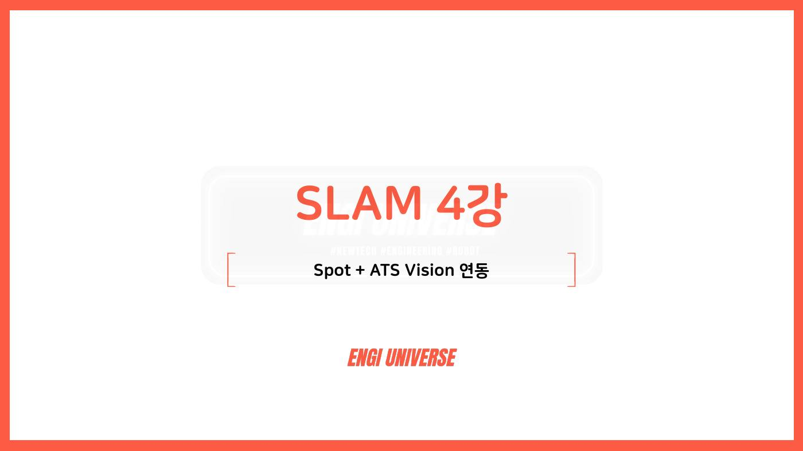
Spot + ATS Vision 연동 (YOLOv8) — 슬라이드 01 (출처: ENGI UNIVERSE)
- 이번 강의 목표
- YOLOv8을 통해 Spot + ATS에 Vision 시스템 연동
- YOLOv8 패키지 복습
- Spot + ATS에 맞는 YOLOv8 패키지 연동
- 앞서 SLAM으로 "내 위치"를 확보했다면, 이번 주차는 YOLO로 "무엇을 봤는지" 를 확보하는 단계입니다.
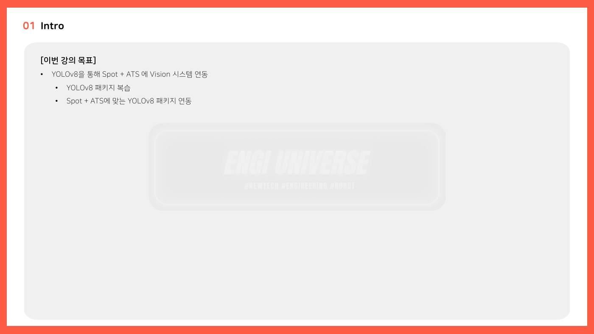
Spot + ATS Vision 연동 (YOLOv8) — 슬라이드 03 (출처: ENGI UNIVERSE)
🧩 2. YOLOv8 구조 — detector → tracker → debug¶
파이프라인 구성¶
- 검출(detector) → 추적(tracker) → 디버그(debug) 노드를 하나의 네임스페이스(
/yolo/...) 아래에서 일괄 실행합니다. - 카메라 토픽만 들어오면 즉시 Detection → Tracking → Debug 파이프라인이 활성화됩니다.
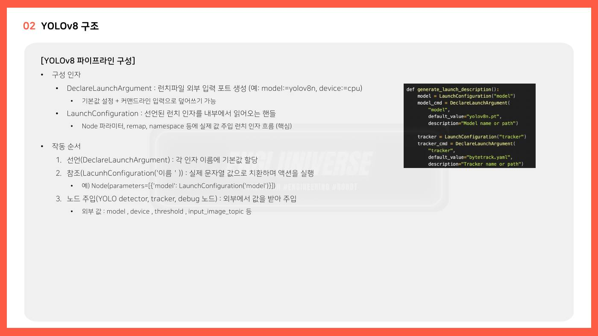
Spot + ATS Vision 연동 (YOLOv8) — 슬라이드 05 (출처: ENGI UNIVERSE)
런치 인자 흐름 (핵심)¶
런치 파일은 외부 입력을 받아 노드 내부로 값을 주입하는 구조입니다.
| 구성 인자 | 역할 |
|---|---|
DeclareLaunchArgument |
런치파일 외부 입력 포트 생성 (예: model:=yolov8n, device:=cpu) |
LaunchConfiguration |
선언된 런치 인자를 내부에서 읽어오는 핸들 |
기본값을 설정하되 커맨드라인 입력으로 덮어쓸 수 있고, 그 값을 Node 파라미터·remap·namespace 등에 실제로 주입합니다.
작동 순서
- Step 1 — 선언(
DeclareLaunchArgument) : 각 인자 이름에 기본값 할당 - Step 2 — 참조(
LaunchConfiguration('이름')) : 실제 문자열 값으로 치환하며 액션 실행 - Step 3 — 노드 주입 : 외부에서 받은 값(
model,device,threshold,input_image_topic등)을 detector/tracker/debug 노드에 주입
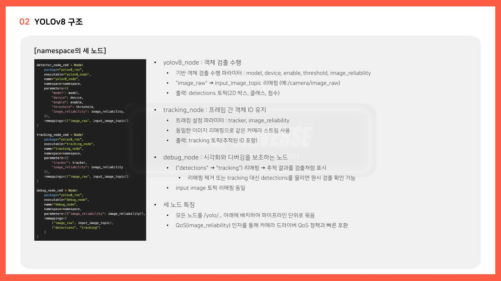
Spot + ATS Vision 연동 (YOLOv8) — 슬라이드 07 (출처: ENGI UNIVERSE)
예시 파일은 실제 동작 코드가 아닙니다
교안의 예시 런치/노드 코드는 구조 이해를 돕기 위한 재구성으로, 그대로 실행되는 코드가 아닙니다.
외부화되는 구성 요소¶
| 인자 | 의미 |
|---|---|
model |
모델 가중치 |
tracker |
트래커 설정 (bytetrack.yaml / botsort.yaml) |
device |
실행 디바이스 (기본: CPU / device:=cuda:0 : GPU) |
enable |
추론 시작 여부 |
threshold |
최소 신뢰도 임계값 |
input_image_topic |
이미지 토픽 이름 |
image_reliability |
입력 이미지 토픽 QoS 설정 |
namespace |
detector / tracker / debug를 묶는 공통 네임스페이스 |
namespace 아래의 세 노드¶
- 파라미터:
model,device,enable,threshold,image_reliability "image_raw"→input_image_topic리매핑 (예:/camera/image_raw)- 출력:
detections토픽(2D 박스, 클래스, 점수)
- 파라미터:
tracker,image_reliability - 동일한 이미지 리매핑으로 같은 카메라 스트림 사용
- 출력:
tracking토픽(추적된 ID 포함)
("detections" → "tracking")리매핑 → 추적 결과를 검출처럼 표시- 리매핑을 제거하거나
tracking대신detections를 물리면 원시 검출 확인 가능
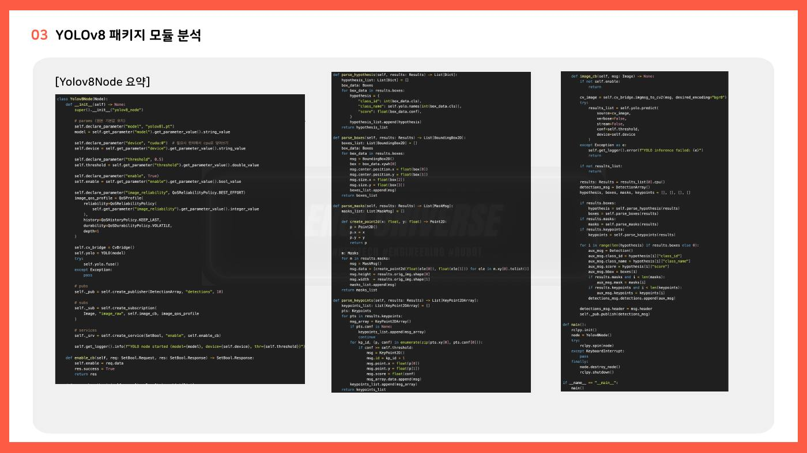
Spot + ATS Vision 연동 (YOLOv8) — 슬라이드 09 (출처: ENGI UNIVERSE)
런치 파일의 가치
input_image_topic, image_reliability(QoS), model, device, threshold, namespace를 런치 인자로 외부화했기 때문에, 토픽명 변경·GPU/CPU 전환·임계치 조정이 필요해도 파일 수정 없이 실행 인자만 바꿔 재사용할 수 있습니다.
🔬 3. YOLOv8 패키지 모듈 분석¶
3-1. yolov8_node (이미지 입력 → 추론 → 퍼블리시)¶
- Step 1 — 이미지 입력 처리 :
/image_raw를 QoS 설정에 따라 구독 →CvBridge로 ROS Image → OpenCV BGR 배열 변환 → Ultralytics YOLO(model)에 전달 - Step 2 — 추론 & 결과 파싱 : Results에서 클래스/점수/바운딩박스/마스크/키포인트 파싱 →
yolov8_msgs/DetectionArray로 묶어detections토픽으로 퍼블리시 - Step 3 — 설정 파라미터 : 런치 인자/파라미터 서버에서
model,device,threshold,image_reliability,enable을 받아 현장 환경에 맞게 추론 조건 조정 - Step 4 — ON/OFF 제어 :
std_srvs/SetBool서비스/enable로 추론을 실시간으로 켜고 끔
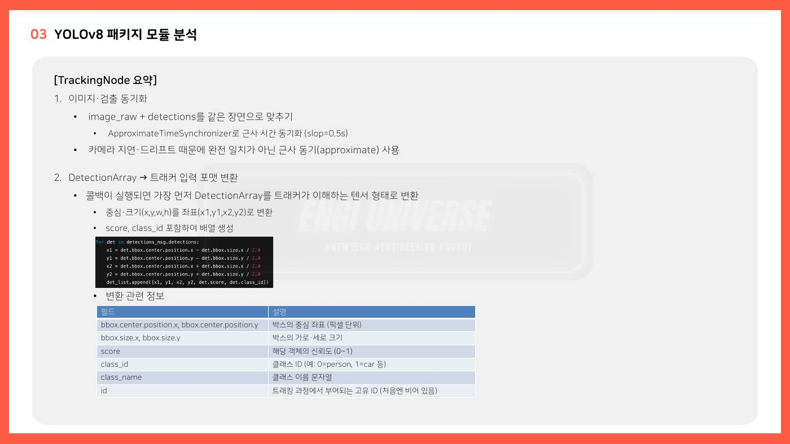
Spot + ATS Vision 연동 (YOLOv8) — 슬라이드 12 (출처: ENGI UNIVERSE)
3-2. tracking_node (프레임 간 ID 유지)¶
- 이미지·검출 동기화 :
image_raw+detections를ApproximateTimeSynchronizer로 근사 시간 동기(slop=0.5s) — 카메라 지연·드리프트 때문에 완전 일치가 아닌 approximate 사용 - 포맷 변환 :
DetectionArray를 트래커 입력 텐서로 변환. 중심·크기(x,y,w,h)→ 좌표(x1,y1,x2,y2),score·class_id포함
| 필드 | 설명 |
|---|---|
bbox.center.position.x/y |
박스 중심 좌표 (픽셀) |
bbox.size.x/y |
박스 가로·세로 크기 |
score |
신뢰도 (0~1) |
class_id |
클래스 ID (예: 0=person, 1=car) |
class_name |
클래스 이름 문자열 |
id |
트래킹 고유 ID (처음엔 비어 있음) |
트래킹 수행 및 보정 — tracker.update()가 이전 프레임과 비교해 동일 객체를 연결(Track ID 부여)하고, 보정된 박스 xywh로 Detection의 bbox.center/size를 갱신합니다.
| frame | box_center | score | class_name | id |
|---|---|---|---|---|
| 1 | (320,240) | 0.90 | person | — |
| 1 | (100,200) | 0.80 | person | — |
| 1 | (500,210) | 0.70 | person | — |
| 2 | (325,243) | 0.88 | person | 1 |
| 2 | (105,204) | 0.79 | person | 2 |
| 2 | (505,213) | 0.71 | person | 3 |
→ 1프레임에서는 ID가 비어 있다가, 2프레임에서 동일 객체에 일관된 ID(1·2·3)가 부여됩니다.
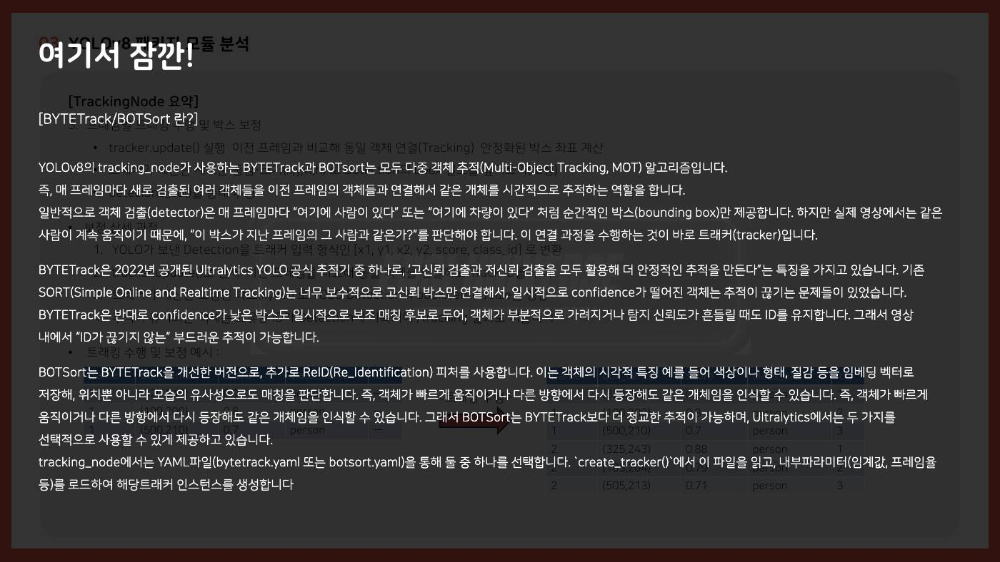
Spot + ATS Vision 연동 (YOLOv8) — 슬라이드 15 (출처: ENGI UNIVERSE)
여기서 잠깐 — BYTETrack / BOTSort 란?
둘 다 다중 객체 추적(Multi-Object Tracking, MOT) 알고리즘으로, 매 프레임 새로 검출된 객체를 이전 프레임 객체와 연결합니다.
- BYTETrack (2022, Ultralytics 공식 추적기 중 하나): 고신뢰 검출 + 저신뢰 검출을 모두 활용해 더 안정적인 추적. 기존 SORT가 고신뢰 박스만 연결해 일시적으로 confidence가 떨어지면 추적이 끊기던 문제를 보완 → 부분 가려짐에도 ID 유지.
- BOTSort: BYTETrack을 개선한 버전으로 ReID(Re-Identification) 피처(색상·형태·질감 등 시각 특징의 임베딩)를 추가 사용 → 위치뿐 아니라 모습 유사성으로도 매칭. 객체가 빠르게 움직이거나 다른 방향에서 재등장해도 동일 개체 인식.
tracking_node는 YAML(bytetrack.yaml/botsort.yaml)을 읽어create_tracker()로 둘 중 하나의 인스턴스를 생성합니다.
트래커 업데이트 & 트랙 매칭 (상세)
# 교안 재구성 — 트래커 업데이트와 Detection 보정 흐름
tracks = self.tracker.update(det_boxes, cv_image) # 이전·현재 프레임 비교 → 동일 객체 연결
for t in tracks:
src_idx = t[-1] # 원본 검출 인덱스 매칭
tracked_box = Boxes(t[:-1], ...) # 보정된 박스 객체
cx, cy, w, h = tracked_box.xywh[0] # 새 중심·크기
# 원래 Detection의 bbox.center / bbox.size 에 덮어쓰기(보정)
if tracked_box.is_track:
detection.id = str(int(tracked_box.id)) # 동일 객체는 항상 같은 ID 유지
- 반환값
tracks= 보정된 바운딩박스 + 대응하는 원본 Detection 인덱스 - 원본 Detection의 클래스/신뢰도 등 메타데이터는 그대로 유지 → YOLO의 흔들리는 박스를 안정화된 박스로 교체
QoS(image_reliability) 선택
- 무선·시뮬레이터 환경 → Best Effort (드롭이 있어도 지연 최소화)
- 로깅·재현성 중요 → Reliable (프레임 손실 최소화)
- 전달된 정수값(0/1/2)을 ROS 2 QoS 프로필로 자동 매핑하며, 런치 인자로 파일 수정 없이 즉시 변경 가능합니다.
3-3. debug_node (시각화·디버깅)¶
- 입력 & 리매핑 : 기본 입력
image_raw+detections, 런치에서("detections", "tracking")으로 리매핑 → 트래킹 결과를 그려서 표시 - 화면 시각화 : 바운딩박스 + 클래스명 + 점수 + 트랙 ID 오버레이, 마스크 → 반투명 폴리곤, 키포인트 → 관절 뼈대 라인 →
/dbg_image퍼블리시 + 로컬 OpenCV 윈도우 실시간 확인 - 파이프라인 내 역할 : 최종 흐름은
image_raw → YOLO(det) → Tracking → Debug(시각화), 네임스페이스로yolo/cam0,yolo/cam1식 다중 카메라 충돌 없이 확장
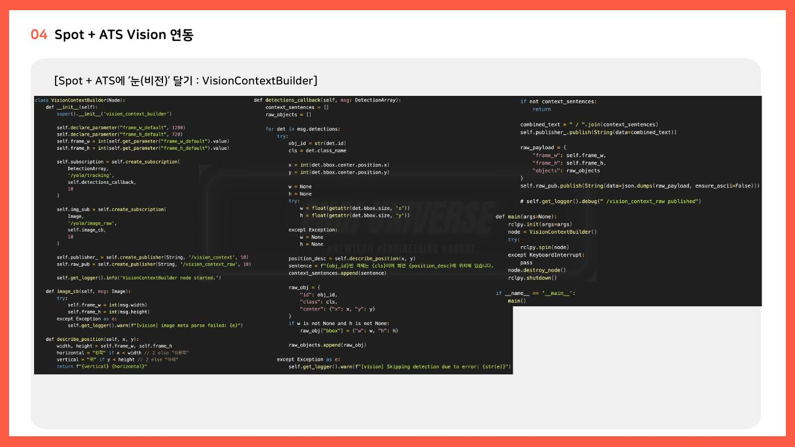
Spot + ATS Vision 연동 (YOLOv8) — 슬라이드 22 (출처: ENGI UNIVERSE)
🤖 4. Spot + ATS Vision 연동¶
Spot + ATS에 '눈(비전)' 달기¶
- YOLOv8 비전 모듈 + Spot + ATS 시스템 연동 → 실제 환경에서 대상을 인식·추적·반응하는 closed-loop 구축
- 핵심 설계 2가지
/ats_twist: 카메라 화면 중심에 목표를 맞추기 위한 제어 신호/cmd_vel: 대상을 일정한 거리에서 따라가기 위한 이동 속도
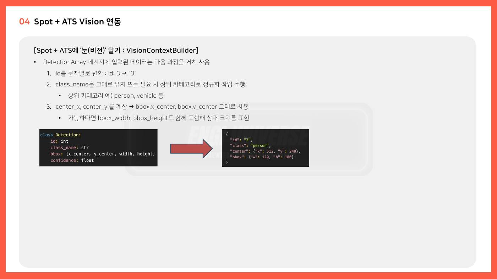
Spot + ATS Vision 연동 (YOLOv8) — 슬라이드 24 (출처: ENGI UNIVERSE)
graph_builder.py — YOLO 파이프라인 입력값 생성¶
GraphBuilder.build_camera_ros_graph()가 RGB 프레임을 ROS로 퍼블리시 → 카메라 영상은/yolo/image_raw로 출력(YOLO 파이프라인의 입력)yolov8_node:/yolo/image_raw구독 → Ultralytics YOLO 추론 →yolov8_msgs/DetectionArray를/yolo/detections로 퍼블리시tracking_node: 이미지 + detections를 타임싱크로 묶어 ByteTrack/BOTSort로 추적 갱신 → 각 객체에 일관된id부여 후/yolo/tracking으로 발행
VisionContextBuilder — 트랙 결과 → 비전 컨텍스트¶
역할 : /yolo/tracking + /yolo/image_raw를 함께 구독하여 "무엇을 봤는가 + 어느 프레임에서 봤는가" 를 한 컨텍스트로 묶습니다.
- 이미지 정보 활용 :
/yolo/image_raw콜백에서 매 프레임frame_w,frame_h자동 갱신 → 화면 중심(frame_w/2, frame_h/2)기준으로 대상 중심과의 오차 Δx, Δy 계산 - 동적 스케일 대응 : 해상도가 바뀌거나 리사이즈되어도 하드코딩 없이 자동 보정 → 후단 제어기가 해상도와 무관하게 같은 스케일로 오차 해석
- 검출 결과 정규화 :
/yolo/tracking콜백에서 각 객체 Detection을 순회하며 통일된 포맷으로 정리
DetectionArray 입력 데이터 처리
- Step 1 —
id를 문자열로 변환 (id: 3→"3") - Step 2 —
class_name을 그대로 유지하거나 상위 카테고리로 정규화 (예:person,vehicle) - Step 3 —
center_x,center_y를bbox.x_center,bbox.y_center로 사용 (가능하면bbox_width,bbox_height로 상대 크기 표현)
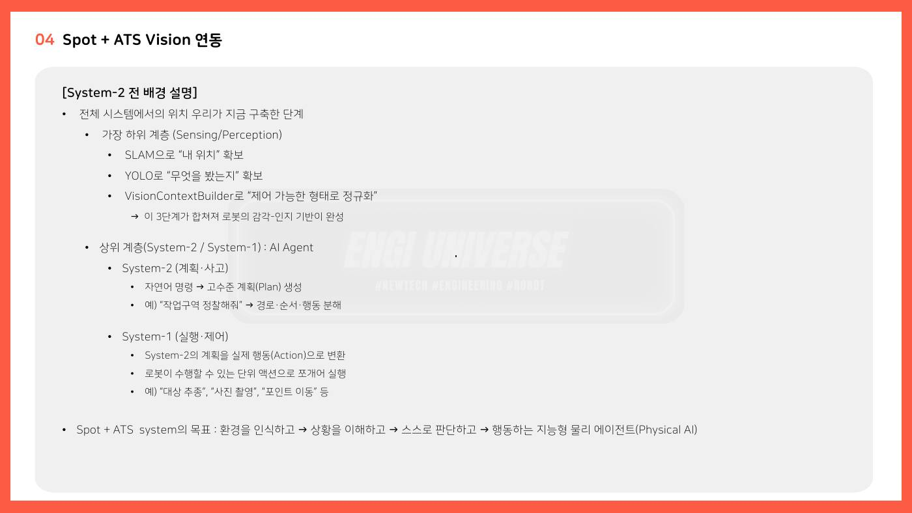
Spot + ATS Vision 연동 (YOLOv8) — 슬라이드 26 (출처: ENGI UNIVERSE)
두 가지 포맷으로 퍼블리시
"현재 프레임에서 2명의 사람이 감지되었습니다" "가장 가까운 대상은 ID3, 중앙 기준 왼쪽 상단 방향에 위치해 있습니다"
System-1에서 사용할 수 있는 표준 JSON 포맷으로 객체별 id·class·중심좌표·크기를 정규화하여 발행
System-2 전 배경 — 우리가 지금 구축한 단계
가장 하위 계층(Sensing/Perception)을 완성하는 단계입니다.
- SLAM으로 "내 위치" 확보 → YOLO로 "무엇을 봤는지" 확보 → VisionContextBuilder로 "제어 가능한 형태로 정규화"
- 이 3단계가 합쳐져 로봇의 감각-인지 기반이 완성되고, 그 위에 상위 계층(System-2: 자연어→계획, System-1: 계획→행동)이 올라갑니다.
- Spot + ATS의 목표: 환경을 인식 → 이해 → 판단 → 행동하는 지능형 물리 에이전트(Physical AI).
🧷 5. Wrap-up¶
오늘 강의 요약:
- YOLO 모듈 패키지를 분석 (detector·tracker·debug 노드 구조)
- Spot + ATS 시스템과 YOLO 연동 (graph_builder → VisionContextBuilder)
- System 구조 분석을 통한 확장 계획 (Sensing/Perception → System-1/System-2)

Spot + ATS Vision 연동 (YOLOv8) — 슬라이드 28 (출처: ENGI UNIVERSE)
✅ 체크포인트¶
- detector → tracker → debug 노드가 하나의 네임스페이스에서 어떻게 묶이는지 설명할 수 있는가
-
DeclareLaunchArgument/LaunchConfiguration로model·device·threshold를 외부화하는 흐름을 이해했는가 - BYTETrack과 BOTSort의 차이(저신뢰 박스 활용 vs ReID 피처)를 구분할 수 있는가
-
tracking_node가 보정된 박스로 Detection을 갱신하고 일관된 ID를 유지하는 과정을 설명할 수 있는가 - VisionContextBuilder가 화면 중심 오차(Δx, Δy)를 계산해
/vision_context로 내보내는 의미를 이해했는가
📊 평가 루브릭¶
| 항목 | 배점 | 기준 |
|---|---|---|
| YOLOv8 파이프라인 이해 | 25 | detector/tracker/debug 노드와 네임스페이스 구조 설명 |
| 런치 인자 외부화 | 20 | DeclareLaunchArgument·LaunchConfiguration 흐름 정확성 |
| 트래킹 원리 | 20 | ApproximateTimeSync·BYTETrack/BOTSort·ID 유지 설명 |
| Spot+ATS 연동 | 20 | graph_builder·VisionContextBuilder·/ats_twist·/cmd_vel 이해 |
| 시스템 계층 이해 | 15 | Sensing/Perception → System-1/System-2 확장 설명 |
🔗 출처 및 참고자료¶
- 교안 「Spot + ATS Vision 연동 (YOLOv8)」 (제작: ENGI UNIVERSE)
- Ultralytics YOLOv8 — https://docs.ultralytics.com
- ByteTrack — https://github.com/ifzhang/ByteTrack
- ROS 2 QoS 설정 — https://docs.ros.org/en/rolling/Concepts/Intermediate/About-Quality-of-Service-Settings.html
📝 10주차 과제¶
과제 10 — YOLOv8 Vision을 Spot+ATS에 연동
목표: YOLOv8 detector→tracker→debug 파이프라인을 구성하고 카메라 토픽에 연동해 실시간 객체 탐지·추적을 확인한다.
수행 단계
- YOLOv8 단독 추론 테스트
- detector/tracker/debug 노드 네임스페이스 일괄 실행
- 카메라 토픽 연동 실시간 탐지 확인
- 특정 클래스 탐지 시 이벤트(로그/토픽) 발행
제출물
- YOLOv8 연동 코드/런치
- 실시간 탐지·추적 영상
- 탐지 결과 토픽 echo 로그
- 파이프라인 구조도(detector→tracker→debug)
평가 (배점 100)
| 항목 | 배점 | 기준 |
|---|---|---|
| YOLOv8 추론 | 30 | 탐지 동작 |
| ROS 연동·추적 | 45 | 실시간 파이프라인 |
| 이벤트 처리 | 25 | 클래스 조건 발행 |
제출 형식·마감: 다음 주차 강의 시작 전까지 LMS 업로드 — ① 코드/설정 zip ② 보고서 PDF(표지: 학번·이름·과제명) ③ 실행 결과 스크린샷/영상. 코드는 재현 가능해야 하며, 외부 코드를 사용하면 출처를 명시한다(미표기 시 감점).
🖼️ 원본 강의 슬라이드¶
원본 강의 슬라이드 전체 (28매)
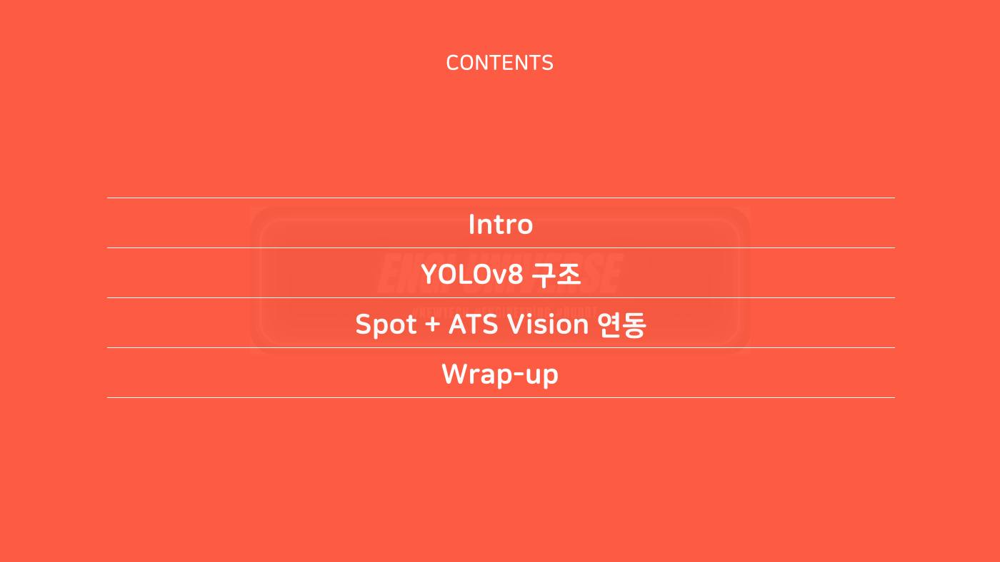
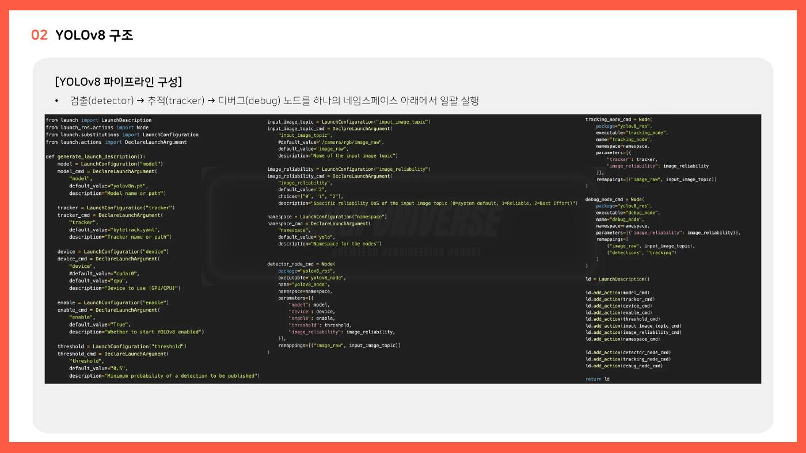
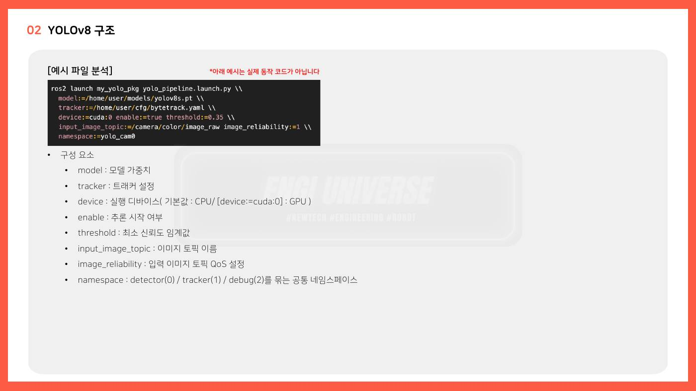
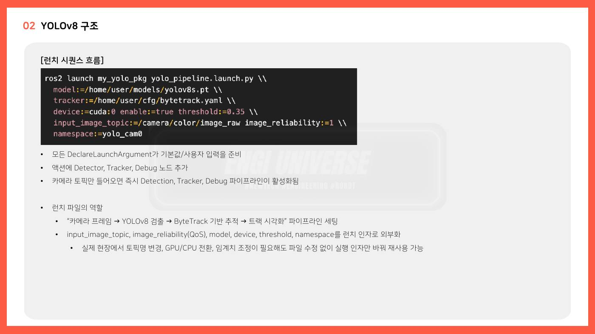
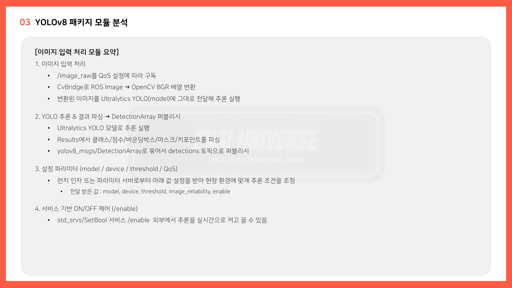
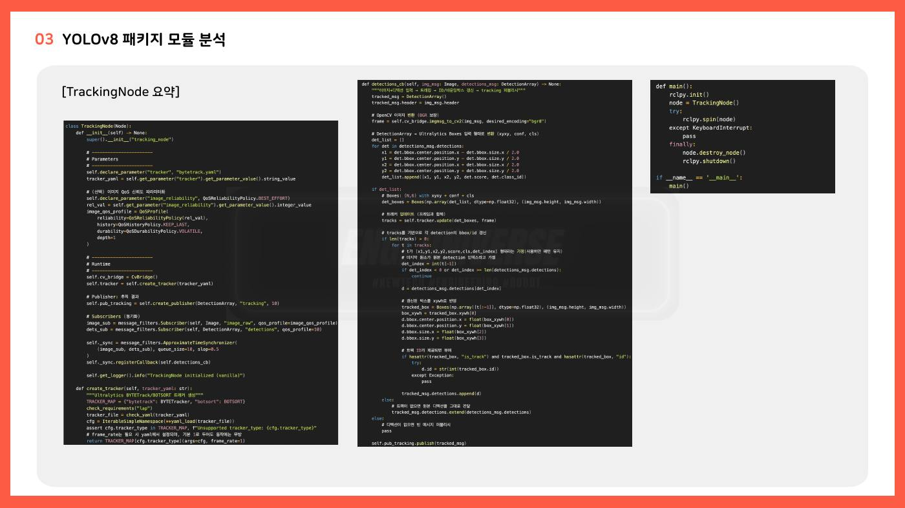
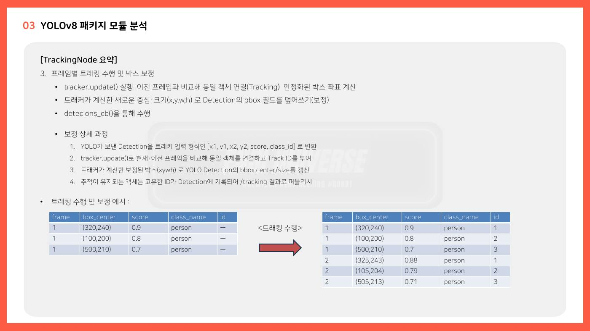
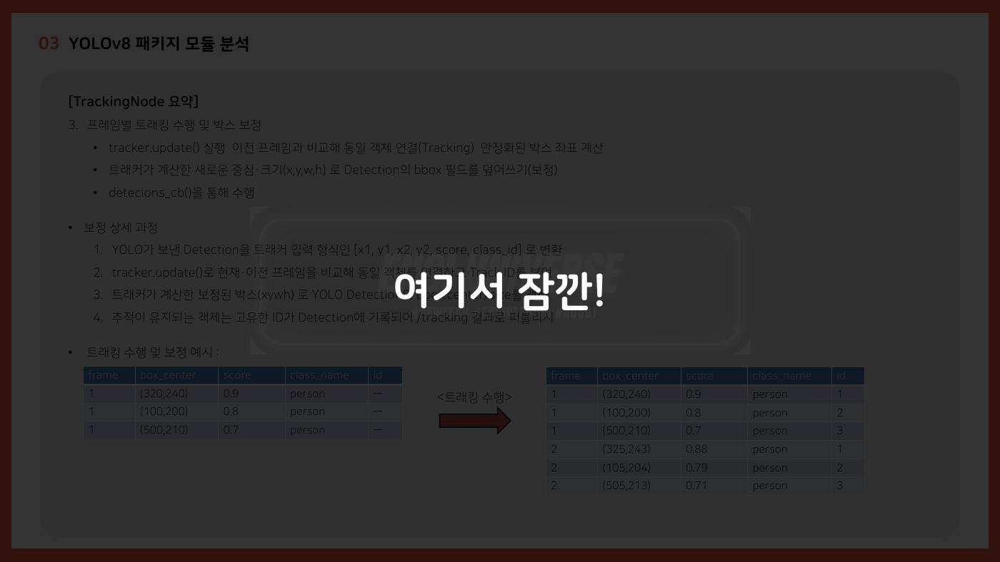
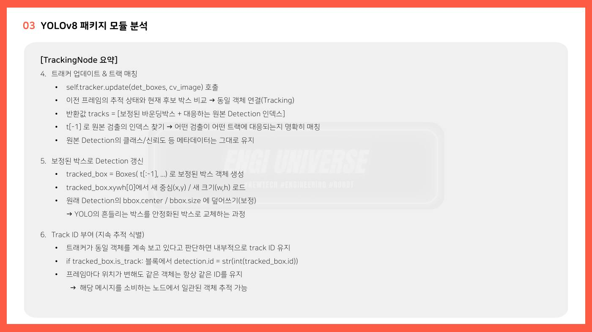
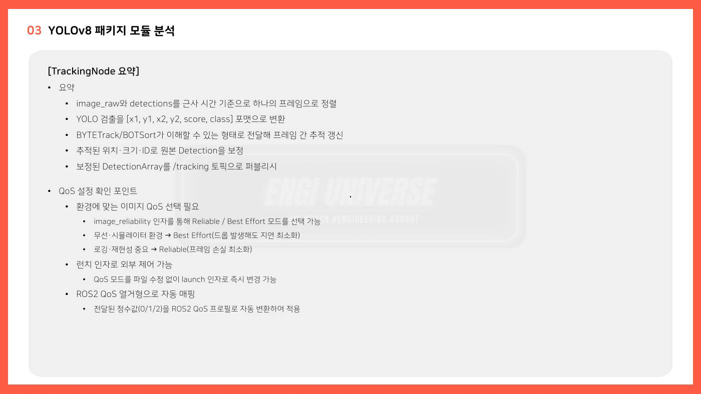
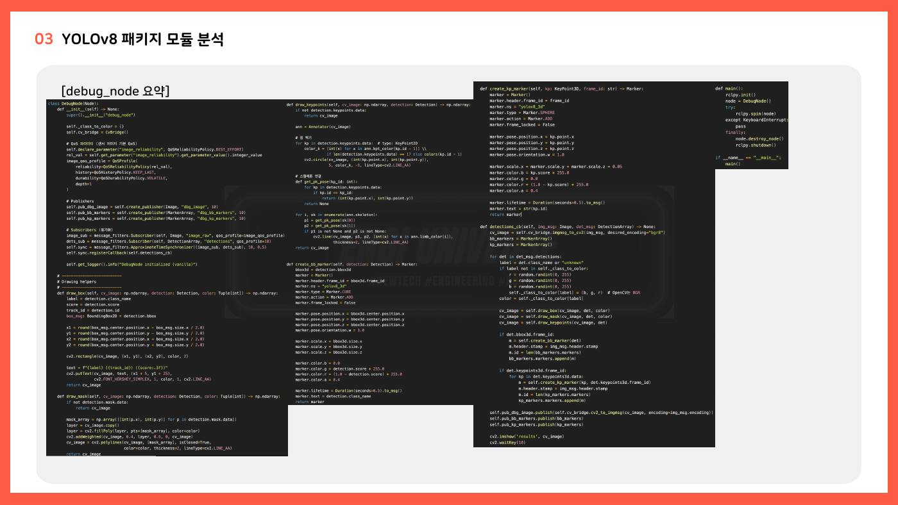
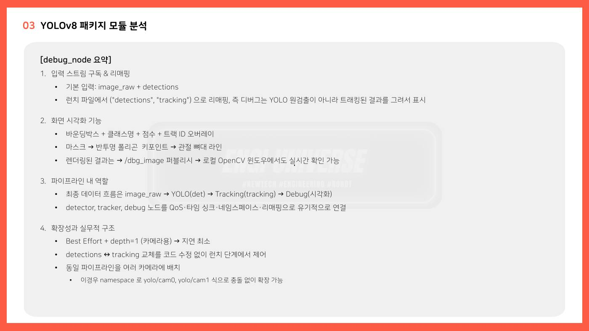
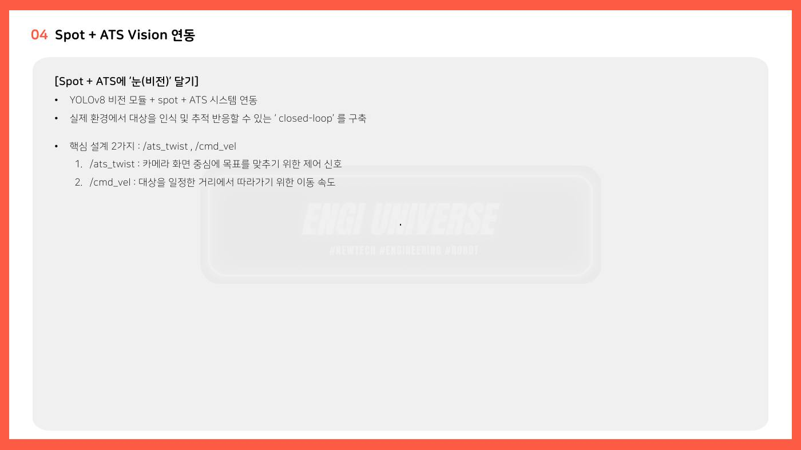
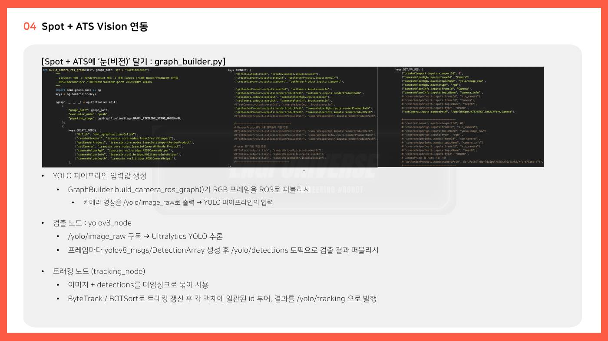
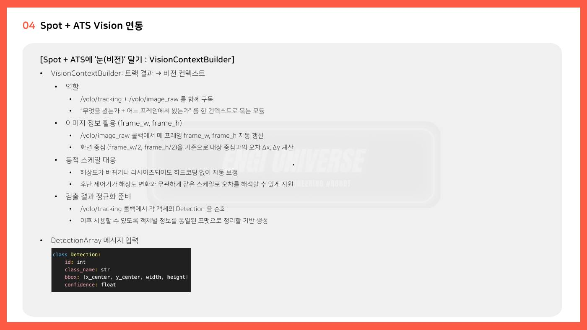
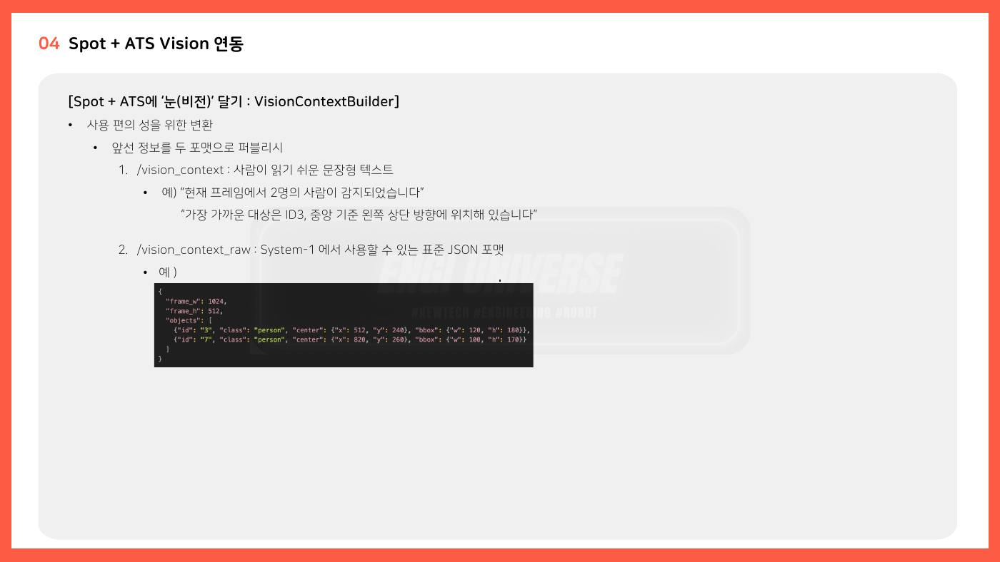
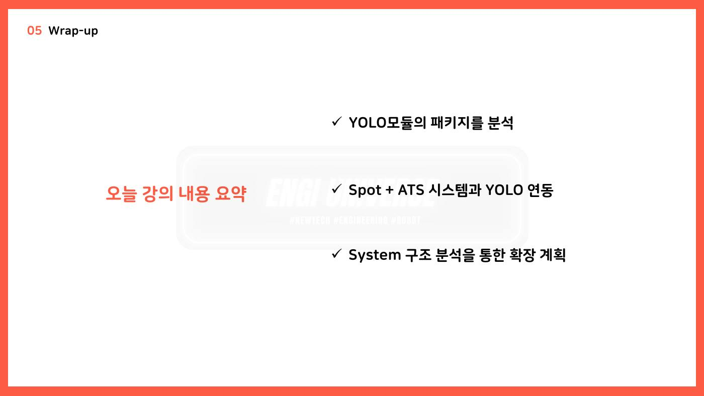